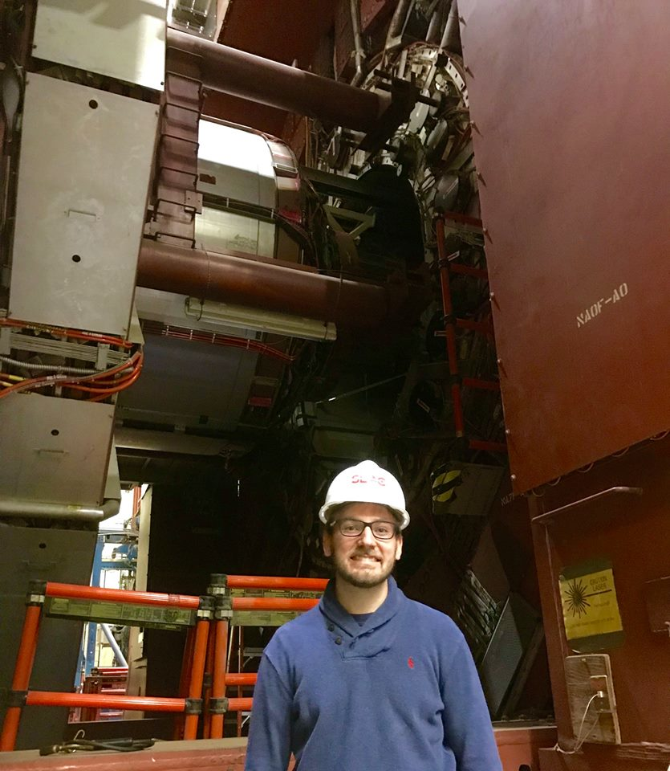

Welcome to my personal website! I study the fundamental building blocks of matter with the CMS experiment. On this site you can find out more about me and my research.
I am a graduate student at the University of California, Davis working with Robin Erbacher. My research is on the Compact Muon Solenoid (CMS) experiment at the Large Hadron Collider (LHC) operated by the European Organization for Nuclear Research (CERN). I study the substructure of collimated hadronic showers (jets) in order to reconstruct signatures of new physics beyond the Standard Model. These signatures may be the result of extra dimensions, Higgs compositeness, or Supersymmetry. In 2019 the LHC will turn off for two years, during this time I will participating in upgrades of the CMS endcap muon spectrometer.
As an undergraduate at the University of Florida, I worked with Darin Acosta on the CMS experiment. During this time, I contributed to the search for the Higgs boson decaying to two muons and participated in upgrades to the Endcap Muon Trackfinder. For my undergraduate thesis, I conducted a preliminary search for anomalous production of highly boosted Z bosons in a dimuon final state.
On the right, I am pictured in front of the older SLD Detecotor at the Stanford Linear Accelerator Center (SLAC). Above is an iSpy event display of the CMS expeirement at CERN

I use CERN TWiki to record notes and instructions for CMS analysts. My TWiki can be accessed here.
I have written several tutorials and compiled some resources for CMS analysts. These can be viewed by clicking here.
I use GitHub to store all of my current projects, including programs for various analyses at CMS. My GitHub can be accessed here.